Tài liệu · Ting Ting Soft
Hướng dẫn sử dụng TransTing
Sổ tay dành cho người dùng nghiệp vụ của phần mềm quản lý vận tải TransTing: cách đăng nhập, thao tác hàng ngày và đọc báo cáo theo từng vai trò. Mỗi việc được hướng dẫn từng bước, kèm ảnh chụp màn hình thực tế với chú thích đỏ.
Chọn vai trò của bạn
Mỗi tài khoản đăng nhập sẽ thấy đúng phần việc của mình. Chọn vai trò bên dưới để đi thẳng tới hướng dẫn dành cho bạn.
- Quản lýBức tranh toàn công ty: điều vận, kế hoạch vận chuyển, lãi lỗ, công nợ, lương và cấu hình. Xem hướng dẫn →
- Kế toánSổ sách từng ngày: bảng số liệu, sổ cái, công nợ, lương và duyệt hoàn ứng. Xem hướng dẫn →
- Lái xeDùng trên điện thoại: xem hành trình, thu nhập trong tháng và kỷ luật của mình. Xem hướng dẫn →
- Giao nhậnChuyến đi được giao, đề nghị tạm ứng và lập phiếu thanh toán hàng tháng. Xem hướng dẫn →
Bắt đầu
Ba việc đầu tiên ai cũng cần: đăng nhập vào hệ thống, làm quen với thanh menu và biết cách đổi mật khẩu. Các ảnh trong tài liệu được chụp từ tài khoản thật của từng vai trò.
Đăng nhập
Mở trình duyệt (Chrome, Edge, Safari…) và vào địa chỉ https://demo.tingting.vip/. Dùng tài khoản do công ty cấp cho bạn.
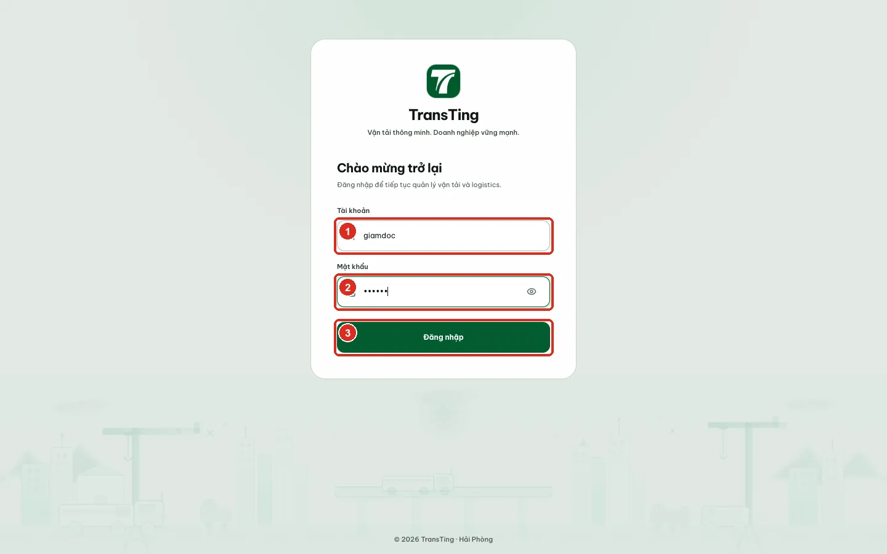
- Gõ tên đăng nhập của bạn (ví dụ
giamdoc,ketoan,laixe…). - Gõ mật khẩu. Chọn biểu tượng con mắt bên phải ô mật khẩu nếu muốn hiện chữ để kiểm tra.
- Nhấn nút Đăng nhập. Sau khi vào, hệ thống tự đưa bạn tới trang chính của vai trò.
Lưu ý: quên mật khẩu hoặc bị khóa tài khoản? Liên hệ người quản lý tại công ty hoặc nhắn Zalo 0914 827 988 để được đặt lại. Tài khoản demo dùng chung (giamdoc, ketoan, laixe, giaonhan) có mật khẩu do đội Ting Ting Soft cung cấp.
Giao diện & điều hướng
Menu bên trái là bản đồ của toàn bộ phần mềm, chia thành nhóm: Vận hành, Nhân sự, Tài chính, Danh mục, Hệ thống. Nhóm đang mở sẽ giữ nguyên khi bạn bấm vào một trang trong nhóm.
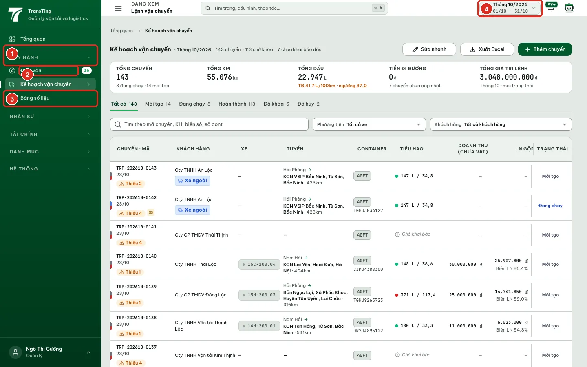
- Nhấn tên nhóm (ví dụ Vận hành) để bung hoặc thu gọn danh mục bên trong.
- Nhấn một mục để mở trang tương ứng — ví dụ Điều vận.
- Các mục khác trong nhóm (như Bảng số liệu) mở tương tự; mục đang mở có nền xanh đậm hơn.
- Nhấn ô Tháng … trên cùng để chọn kỳ dữ liệu — mọi danh sách và báo cáo sẽ hiển thị đúng tháng bạn chọn.
Mẹo: trên máy tính, tổ hợp phím Ctrl/Cmd + B thu gọn hoặc mở rộng thanh menu để rộng chỗ làm việc.
Tài khoản & đổi mật khẩu
Tên và vai trò của bạn luôn nằm ở góc trên bên phải. Mọi thao tác với tài khoản (xem hồ sơ, đổi mật khẩu, đăng xuất) đều bắt đầu từ đây.
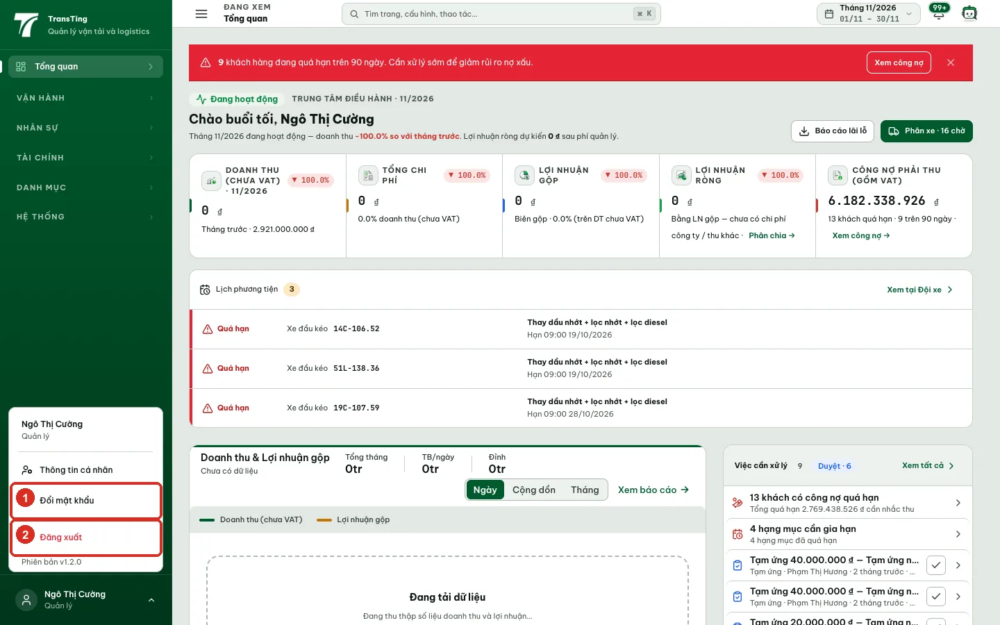
- Nhấn vào tên bạn ở góc phải rồi chọn Đổi mật khẩu (xem Hồ sơ ngay phía trên nếu cần sửa email/số điện thoại).
- Chọn Đăng xuất khi rời máy tính dùng chung.
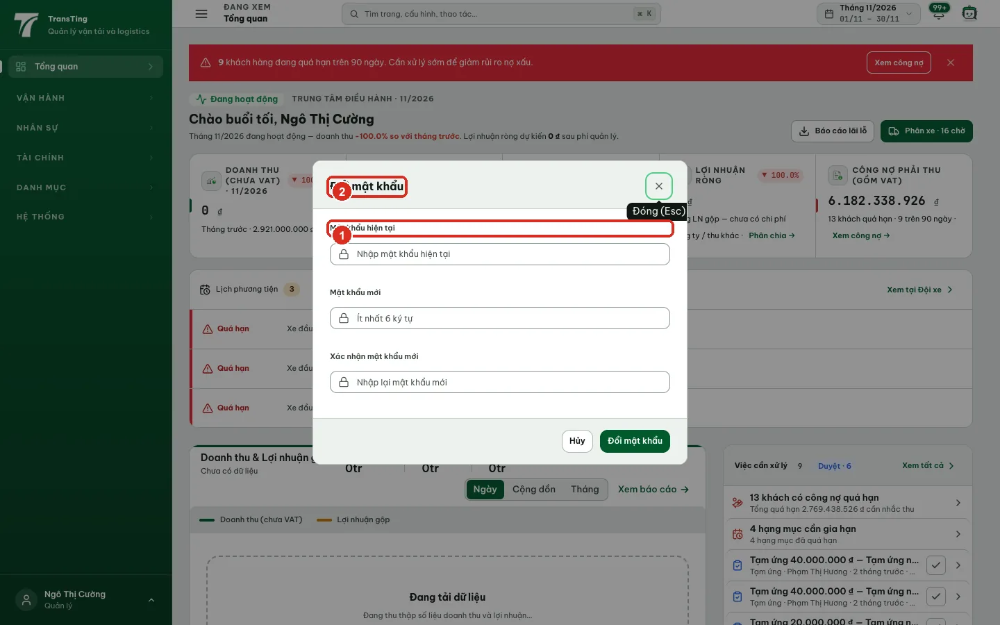
- Nhập mật khẩu hiện tại, rồi nhập hai lần mật khẩu mới (tối thiểu 6 ký tự).
- Nhấn Đổi mật khẩu để lưu. Lần sau đăng nhập dùng mật khẩu mới.
Quản lý
Quản lý nhìn thấy toàn bộ hoạt động: từ điều vận hàng ngày, kế hoạch vận chuyển, tài chính — công nợ, tới danh mục và cấu hình hệ thống. Menu của bạn gồm đầy đủ các nhóm dưới đây.
Tổng quan
Trang Tổng quan là chốt kiểm soát mỗi sáng: doanh thu — chi phí trong tháng, việc cần xử lý và tình trạng xe.
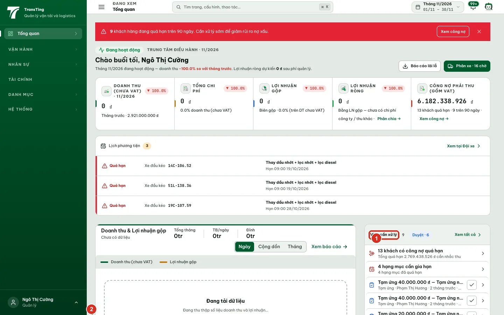
- Xem Việc cần xử lý: công nợ tới hạn, phân xe còn chờ… Nhấn "Xem công nợ →" để đi thẳng tới nơi xử lý.
- Kiểm tra Tình trạng đội xe: xe nào đang chạy, đang rảnh, đang sửa để kịp điều phối.
Điều vận & phân xe
Trang Điều vận gom mọi đơn hàng cần gán xe trong ngày. Số đếm đỏ trên menu (ví dụ "Điều vận 16") cho biết còn bao nhiêu đơn đang chờ.
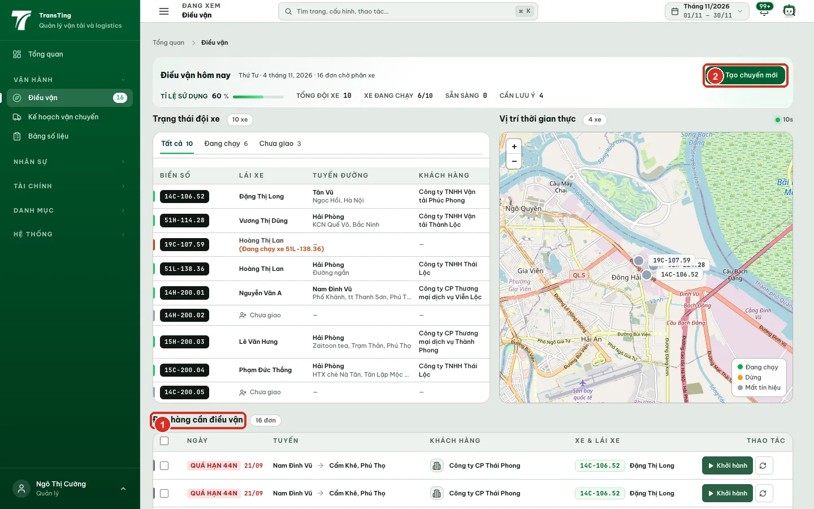
- Rà Đơn hàng cần điều vận: từng đơn hiện tuyến, hàng và trạng thái; gán xe/lái xe ngay trên đơn.
- Cần tạo mới? Nhấn Tạo chuyến mới ở góc phải để mở form tạo lệnh vận chuyển.
Kế hoạch vận chuyển
Đây là danh sách toàn bộ chuyến theo tháng. Mỗi dòng là một lệnh vận chuyển — nhấn vào để mở chi tiết.
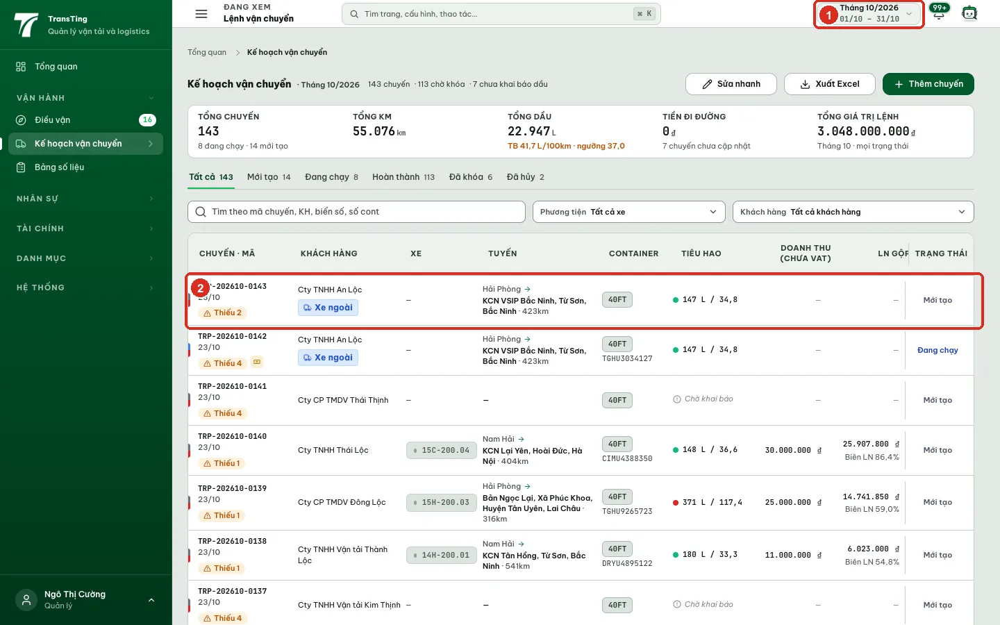
- Chọn tháng cần xem — danh sách tự nạp lại theo kỳ.
- Nhấn vào một dòng chuyến để mở chi tiết (mã chuyến, khách, xe, tuyến).
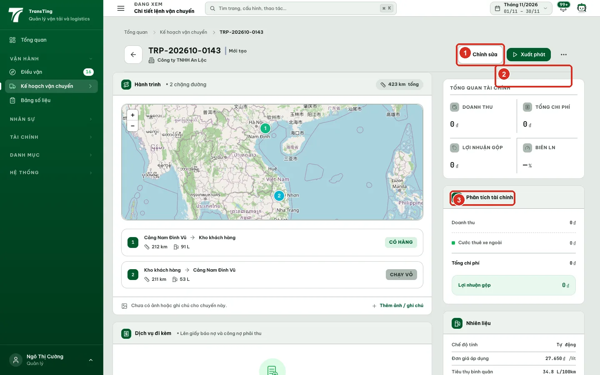
- Nhấn Chỉnh sửa để sửa thông tin chuyến (hành trình, container, chi phí…).
- Cần đổi xe hoặc lái xe giữa chừng? Nhấn Phân xe lại.
- Khối Phân tích tài chính dưới trang tổng hợp doanh thu, chi phí và lãi của chính chuyến đó.
Tạo lệnh vận chuyển
Vào Kế hoạch vận chuyển rồi nhấn Thêm chuyến (hoặc từ trang Điều vận, nút Tạo chuyến mới) để mở form dưới đây.
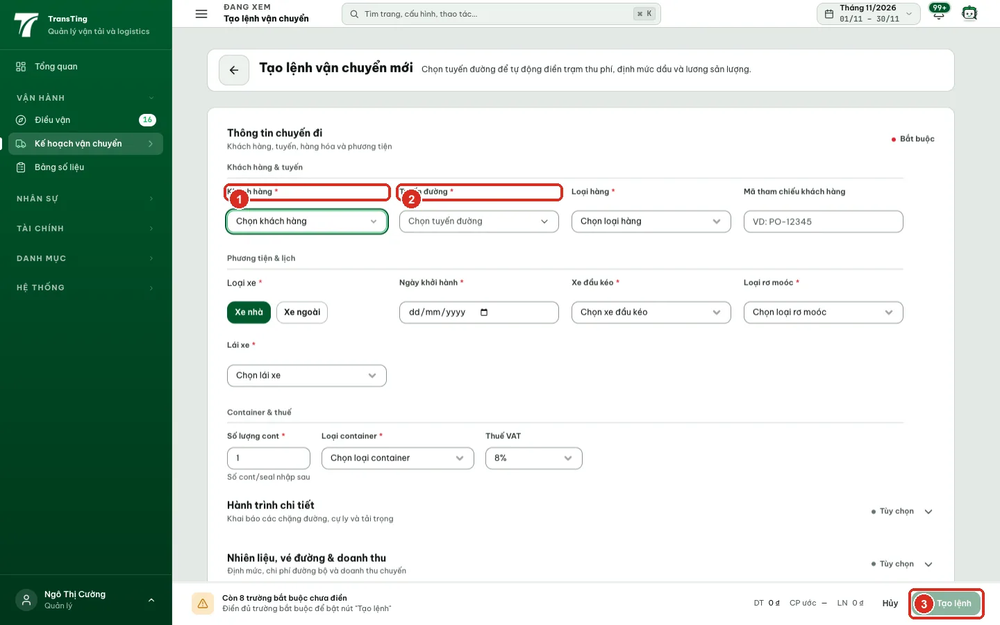
- Chọn Khách hàng — gõ vài chữ cái đầu để tìm nhanh.
- Chọn Tuyến đường; các ô còn lại (xe, lái xe, container…) điền theo form, ô có dấu * là bắt buộc.
- Nhấn Tạo lệnh để lưu. Lệnh mới xuất hiện ngay trong danh sách chuyến.
Bảng số liệu
Bảng tổng hợp mỗi lệnh theo dòng — nơi đối chiếu số liệu vận hành với chứng từ. Có thể thêm dòng tay và xuất ra Excel.
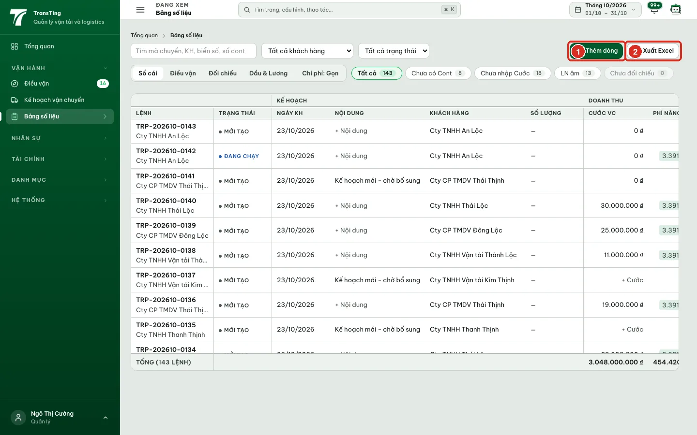
- Nhấn Thêm dòng khi cần bổ sung một dòng ghi chú/số liệu ngoài các lệnh tự sinh.
- Nhấn Xuất Excel để tải bảng về máy gửi sổ sách hoặc kiểm toán.
Lương & chấm công
Tổng kết lương tháng của từng người: lương chạy chuyến, chấm công, phụ cấp và các khoản trừ.
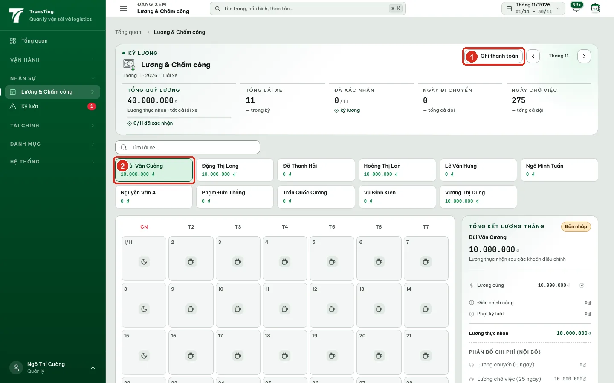
- Nhấn Ghi thanh toán để đánh dấu lương tháng đó đã trả, hệ thống tự lưu người và ngày ghi.
- Xem từng người: nhấn vào dòng lương (ví dụ nhân viên trong ảnh) để bung chi tiết các khoản.
Kỷ luật
Quản lý biên bản vi phạm của lái xe: lỗi an toàn, chậm hẹn… ảnh hưởng trực tiếp tới lương.
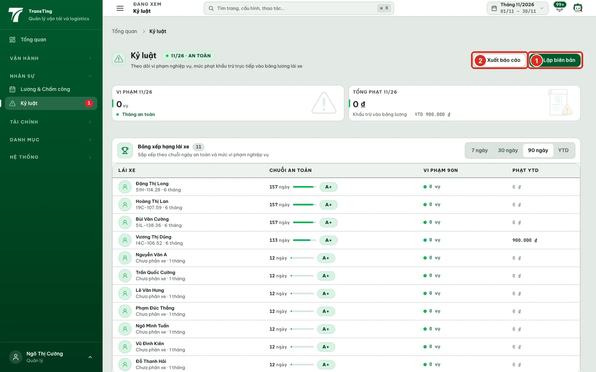
- Nhấn Lập biên bản, chọn lái xe, lý do (theo danh mục) và mức phạt rồi lưu.
- Nhấn Xuất báo cáo để in danh sách kỷ luật trong kỳ gửi ban giám đốc.
Báo cáo lãi lỗ
Bức tranh thu — chi — lãi của toàn công ty theo tháng. Đổi tháng ở thanh trên để xem kỳ khác.
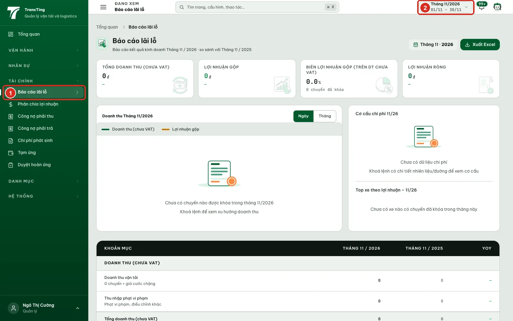
- Chọn Báo cáo lãi lỗ trong nhóm Tài chính để mở bảng tổng hợp doanh thu, chi phí, lợi nhuận.
- Dùng bộ chọn tháng để so sánh từng kỳ.
Phân chia lợi nhuận
Lợi nhuận sau chi phí được chia cho cổ đông theo tỷ lệ góp vốn, kèm nghiệp vụ chốt quý.
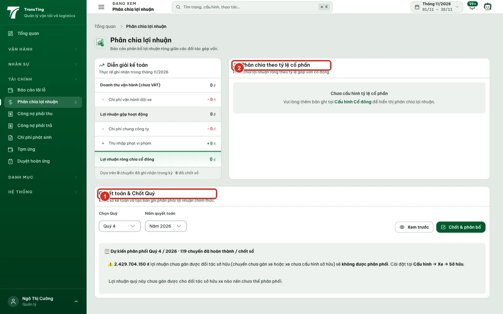
- Xem Quyết toán & Chốt Quý trước khi chia: chốt số liệu quý để khóa các khoản phát sinh.
- Kiểm tra Phân chia theo tỷ lệ cổ phần: mỗi cổ đông một dòng, số tiền tự tính theo vốn góp.
Công nợ phải thu
Tiền khách hàng còn nợ, nhóm theo từng khách và theo kỳ. Mức tô màu cảnh báo đơn hàng sắp tới hạn.
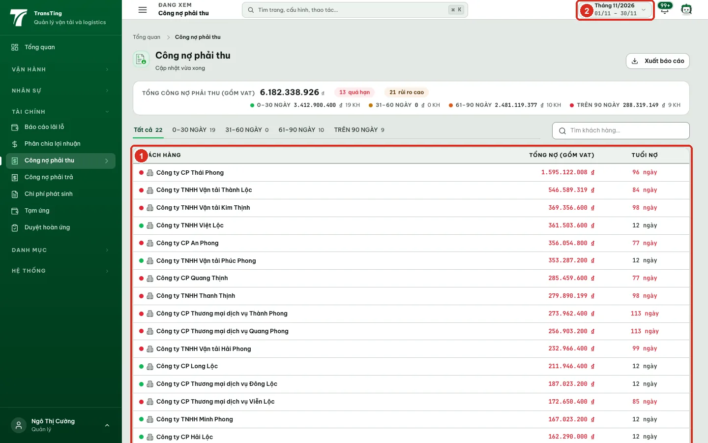
- Nhấn vào thẻ khách hàng để mở sổ nợ chi tiết: từng chuyến, từng đợt thanh toán và chứng từ.
- Đổi tháng để xem phát sinh và tất toán tới từng kỳ.
Công nợ phải trả
Ngược với phần phải thu: đây là tiền công ty còn nợ nhà cung cấp — xăng dầu, ngoài xe, phí dịch vụ… theo nhóm chi phí.
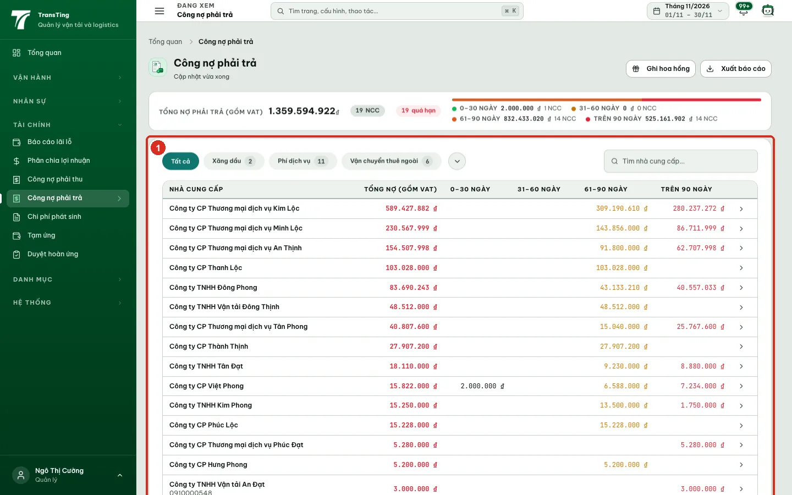
- Dùng chip lọc nhóm (Tất cả / Xăng dầu / Phí dịch vụ…) để xem nợ từng loại; nhấn vào nhà cung cấp để mở sổ chi tiết.
Chi phí phát sinh
Các khoản chi ngoài dự kiến trong tháng: phạt, sửa chữa, chi phí hành chính…
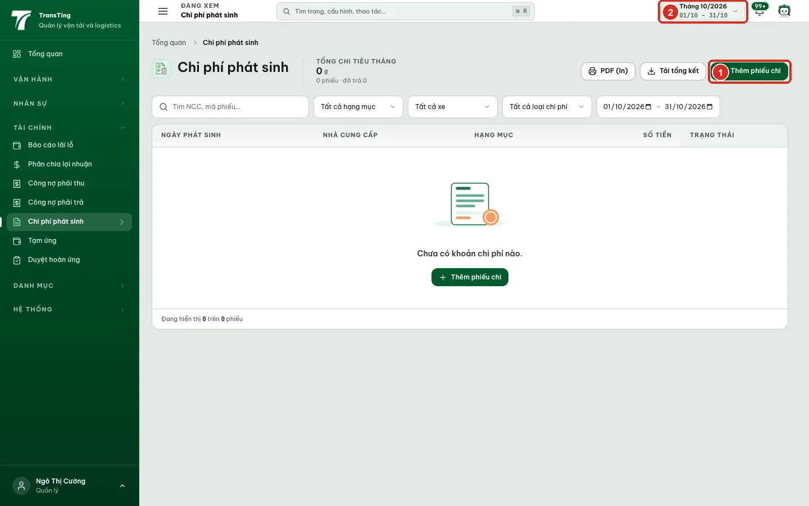
- Nhấn Thêm phiếu chi, chọn nhóm chi phí, số tiền và đính kèm chứng từ rồi lưu.
- Chọn tháng để xem các phiếu của kỳ tương ứng.
Tạm ứng
Nhân viên giao nhận đề nghị tạm ứng tiền chuyến; bạn duyệt hoặc từ chối ngay trên thẻ.
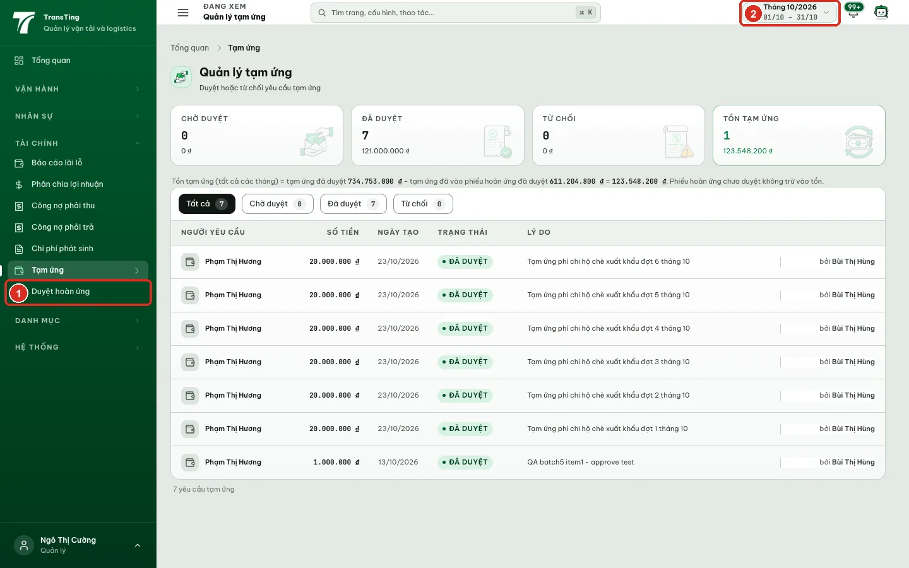
- Trên thẻ yêu cầu đang chờ, nhấn Duyệt để đồng ý (hoặc Từ chối nếu không hợp lệ — kèm lý do cho người đề nghị).
- Đổi tháng để xem lại các đề nghị đã xử lý.
Duyệt hoàn ứng
Sau chuyến đi, giao nhận nộp phiếu hoàn ứng. Mọi phiếu chờ bạn xử lý nằm trong tab Chờ xử lý.
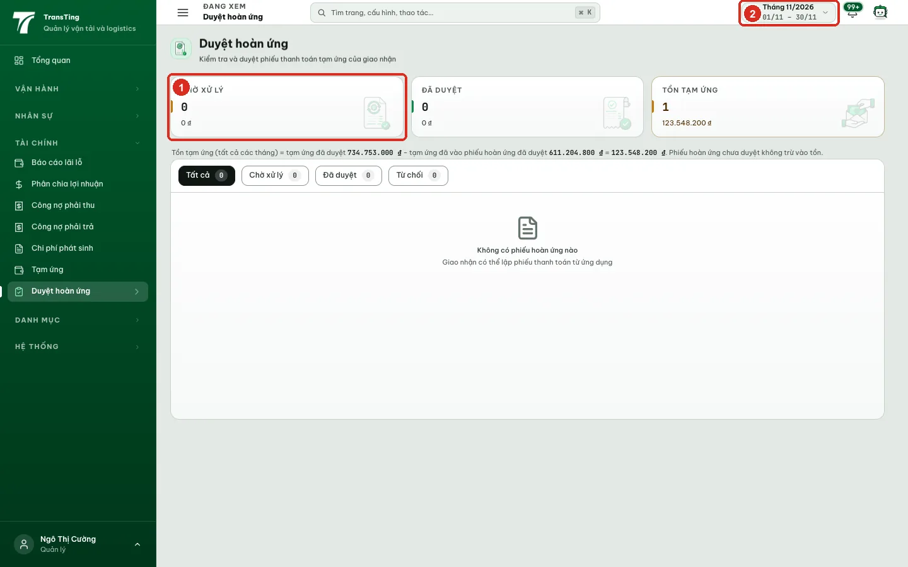
- Mở tab Chờ xử lý — mở từng phiếu để xem chi tiết chi phí và chứng từ đính kèm.
- Duyệt nếu chi phí hợp lệ, hoặc trả lại kèm lý do; đổi tháng để xem các phiếu đã xử lý ở tab Đã duyệt.
Danh mục: đội xe, khách hàng, nhà cung cấp, tuyến đường
Bốn danh mục nền tảng — mọi form trong hệ thống lấy dữ liệu từ đây.
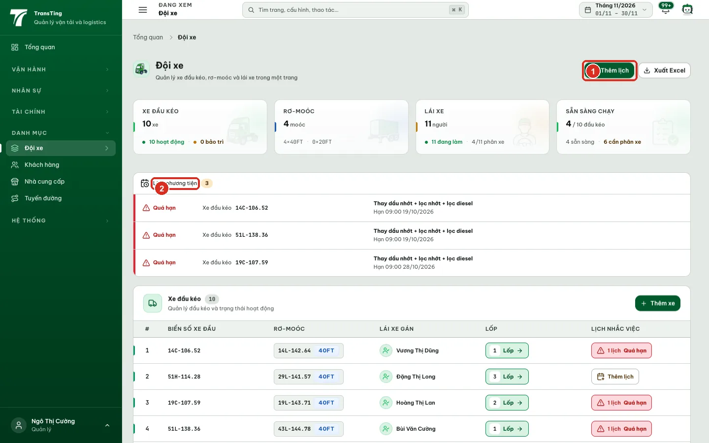
- Nhấn Thêm lịch để đặt lịch đăng kiểm, bảo dưỡng, bảo hiểm cho từng xe.
- Theo dõi Lịch phương tiện để không bỏ lỡ kỳ hạn của bất kỳ xe, rơ-mooc nào.
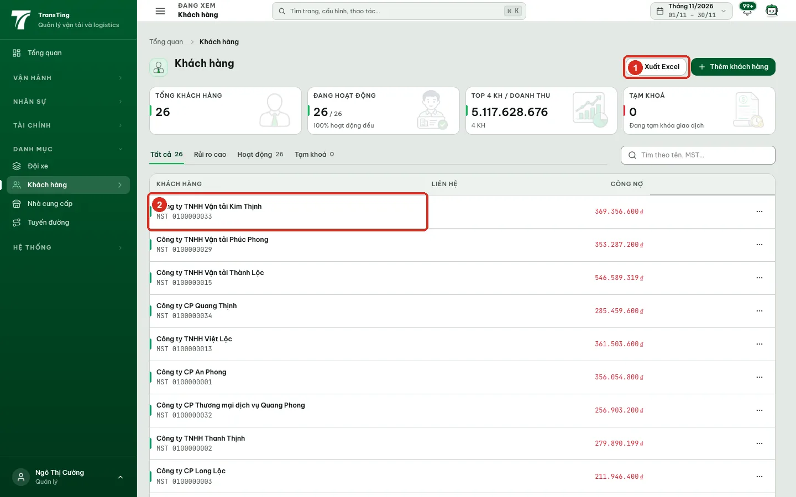
- Nhấn vào dòng khách hàng để mở hồ sơ: mã số thuế, liên hệ và sổ công nợ gắn với khách.
- Nhấn Xuất Excel để lấy danh sách dùng ngoài hệ thống.
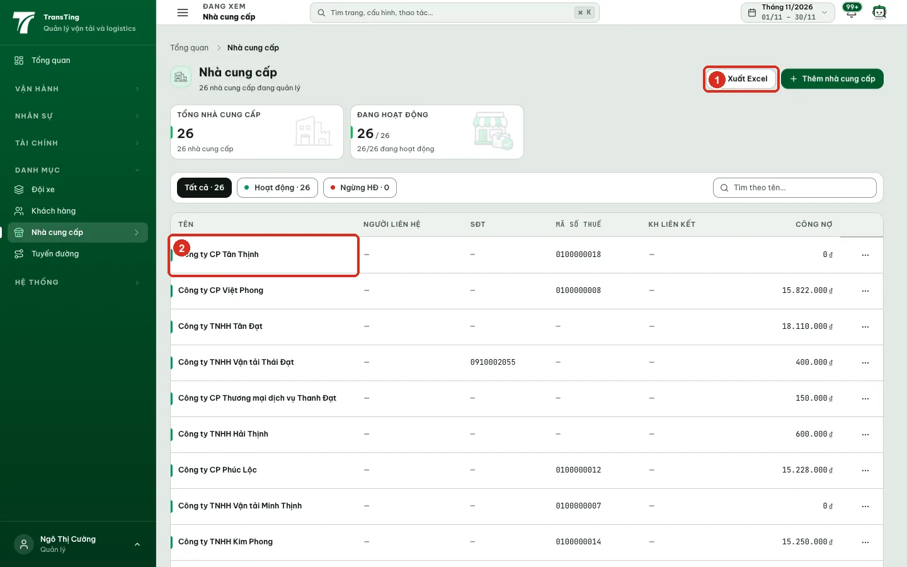
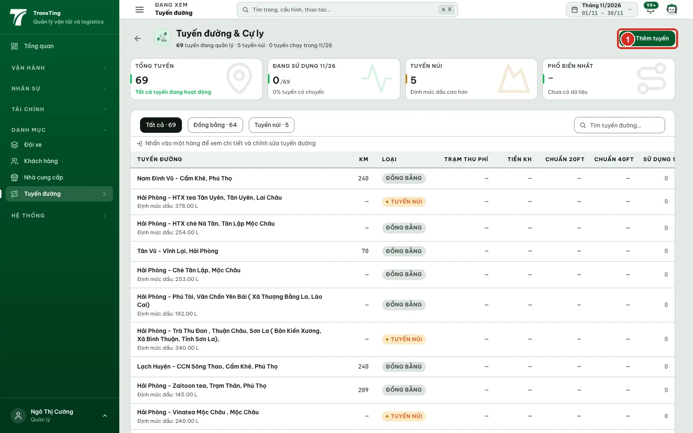
Người dùng & nhật ký
Cấp tài khoản cho nhân viên mới và xem lại ai đã làm gì trong hệ thống.
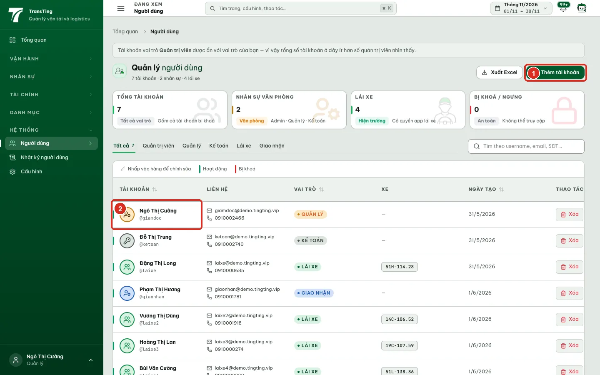
- Nhấn Thêm tài khoản: chọn tên đăng nhập, họ tên và vai trò (kế toán, lái xe, giao nhận…).
- Khởi tạo/tạm khóa tài khoản ngay trên dòng tương ứng; mật khẩu đầu tiên hệ thống tự tạo.
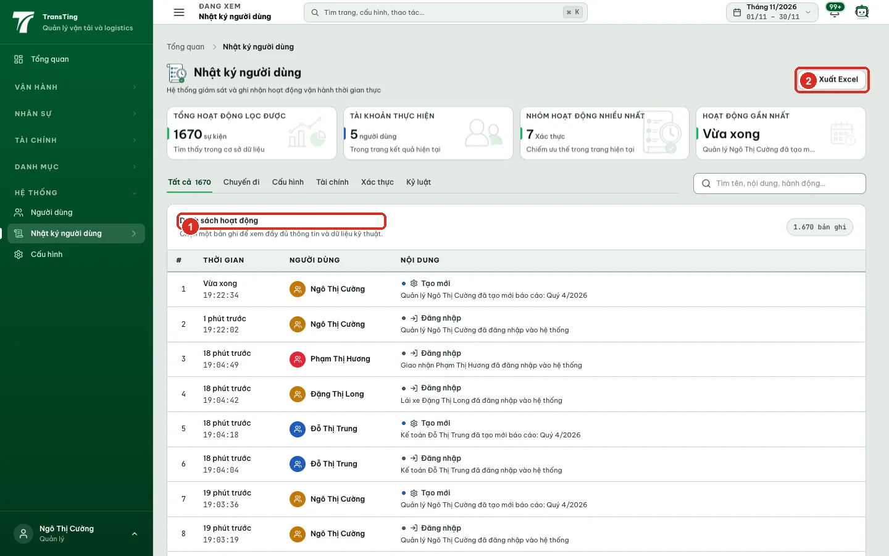
Cấu hình hệ thống
Mọi quy tắc nghiệp vụ nằm trong các thẻ cấu hình: thông tin công ty, định mức nhiên liệu, nhà cung cấp dầu, tiền đi đường, chi phí chuyến đi…
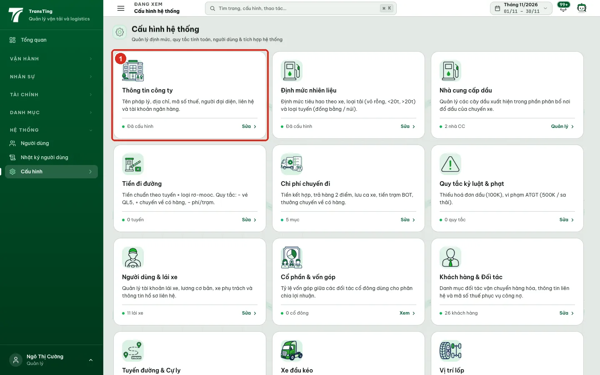
Thận trọng: đổi định mức, đơn giá hay biểu phí sẽ ảnh hưởng tới mọi tính toán của các chuyến mới — chỉ thay đổi khi đã thống nhất với kế toán.
Kế toán
Kế toán dùng cùng hệ thống với Quản lý nhưng menu được thu gọn: không có Điều vận và Người dùng — phần mềm chỉ hiện đúng việc sổ sách. Mọi trang Tài chính, Nhân sự, Danh mục đều giống mục Quản lý ở trên.
Menu của kế toán
So với Quản lý, menu Vận hành của bạn nhẹ hơn: không có mục Điều vận.
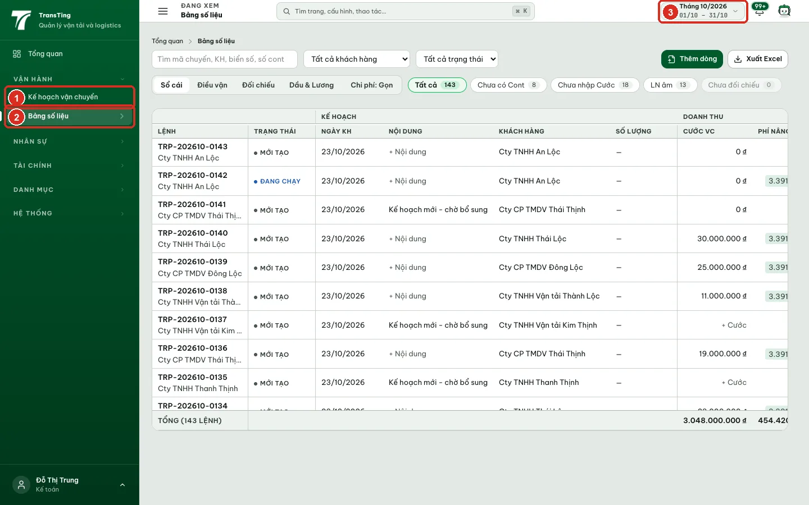
- Mở Kế hoạch vận chuyển để đối chiếu từng lệnh với chứng từ.
- Vào Bảng số liệu — bàn làm việc chính của kế toán trong ngày.
- Chọn tháng ở thanh trên trước khi bắt đầu — toàn bộ số liệu theo kỳ đó.
Bảng số liệu & sổ cái
Bảng số liệu cho phép ghi thêm dòng tay và xem theo các khối sổ (sổ cái, sổ chi tiết); xuất Excel để lưu sổ.
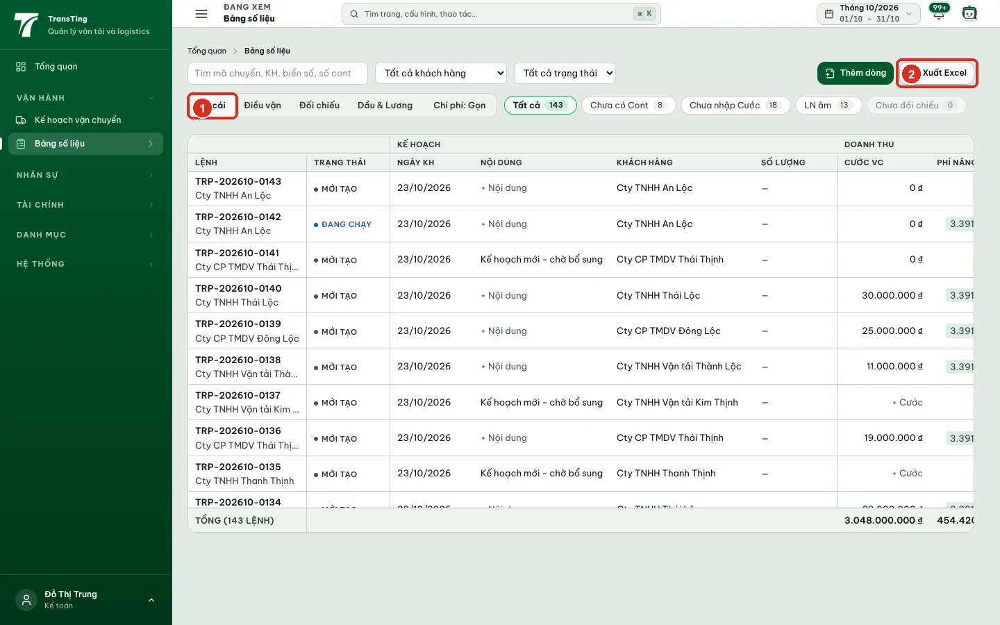
- Chuyển giữa các khối sổ bằng tab Sổ cái / sổ chi tiết để xem đúng góc dữ liệu cần đối chiếu.
- Nhấn Xuất Excel để tải sổ kỳ hiện tại về máy.
Công nợ phải thu
Cùng trang với Quản lý — với kế toán đây là nơi tất toán từng khách hàng trong kỳ.
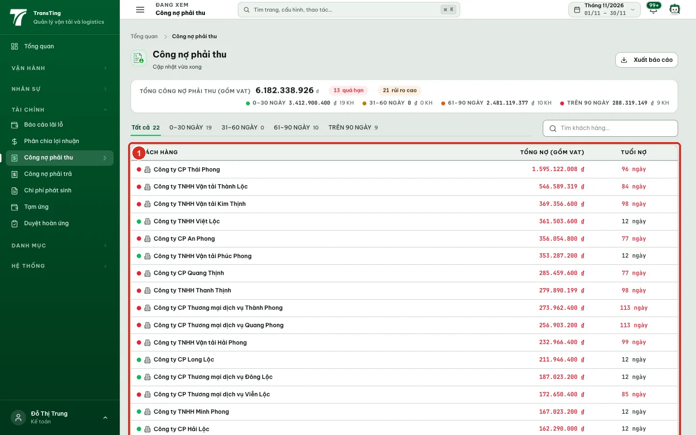
Lương & ghi thanh toán
Sau khi chấm công và tính lương xong, kế toán ghi nhận đã trả lương ngay trên trang này.
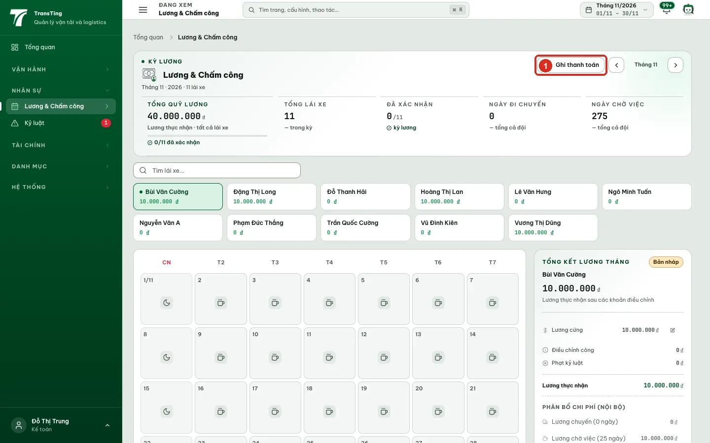
Duyệt hoàn ứng
Phiếu hoàn ứng của giao nhận chờ kế toán đối chiếu chứng từ trước khi hoàn tiền.
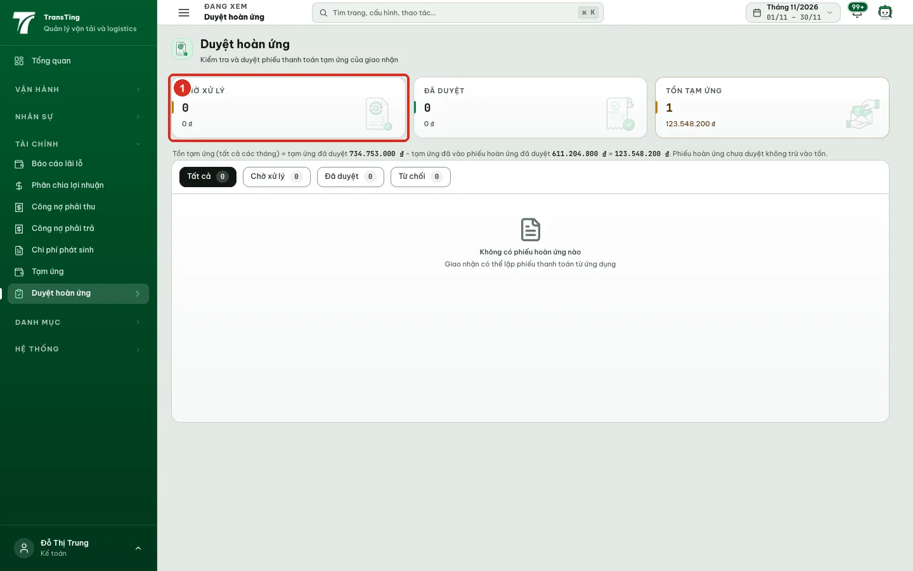
Lái xe
Lái xe dùng TransTing ngay trên điện thoại. Chỉ có ba việc cần quan tâm: hành trình được giao, thu nhập trong tháng và kỷ luật của mình. Ảnh dưới đây chụp từ điện thoại thật.
Xem hành trình
Mở ứng dụng, trang đầu tiên là Hành trình: mọi chuyến được giao trong tháng, kèm trạng thái.
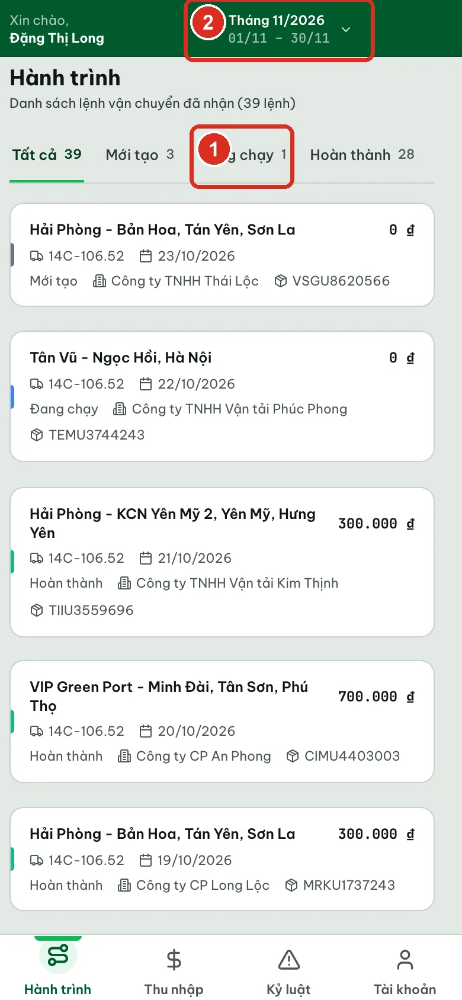
- Chạm chip trạng thái (ví dụ Đang chạy) để lọc nhanh chuyến theo nhóm: mới tạo, đang chạy, hoàn thành.
- Chạm ô tháng để xem hành trình của tháng khác.
Chi tiết chuyến đi
Chạm vào một chuyến để xem tuyến, giờ chạy, xe và tiền công của chuyến đó.
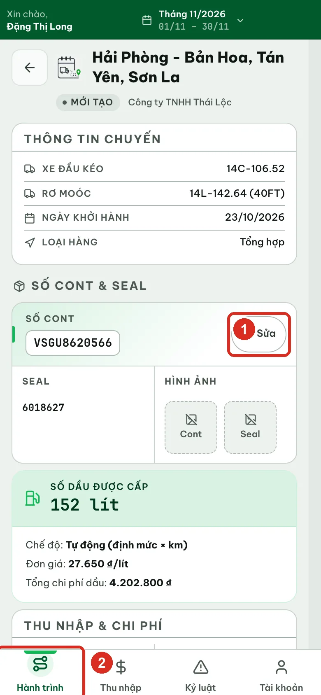
- Nhấn Sửa nếu cần cập nhật thông tin mình phụ trách (điểm nghỉ, số km thực tế…).
- Chạm Hành trình ở thanh dưới để quay lại danh sách, hoặc chuyển nhanh sang Thu nhập, Kỷ luật.
Thu nhập
Tổng tiền công theo từng chuyến và cả tháng — lái xe tự theo dõi không cần hỏi kế toán.
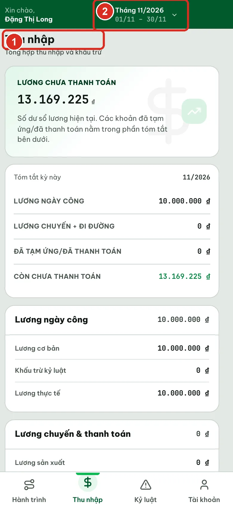
Kỷ luật của tôi
Mọi biên bản kỷ luật gắn với bạn: lý do, mức ảnh hưởng lương và ngày lập.
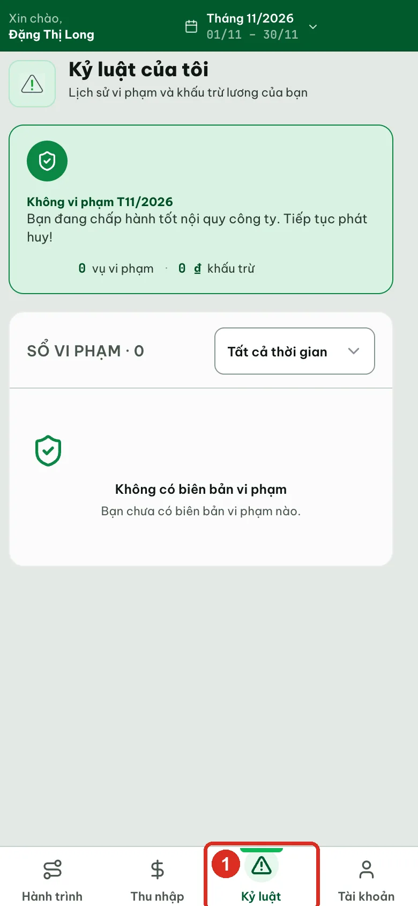
Giao nhận
Nhân viên giao nhận theo dõi chuyến mình phụ trách, đề nghị tạm ứng trước chuyến và nộp phiếu thanh toán sau chuyến. Giao diện chính dùng tốt trên cả điện thoại và máy tính.
Chuyến đi
Danh sách chuyến được giao trong tháng, mỗi thẻ một chuyến với màu theo trạng thái.
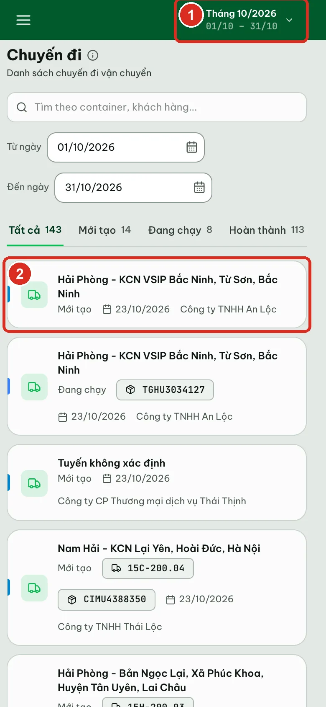
- Chọn tháng để xem các chuyến trong kỳ.
- Chạm vào thẻ chuyến để mở chi tiết hành trình của chuyến đó.
Chi tiết chuyến & gán lái xe
Trong chi tiết chuyến, giao nhận gán lái xe cho chuyến và cập nhật số container.
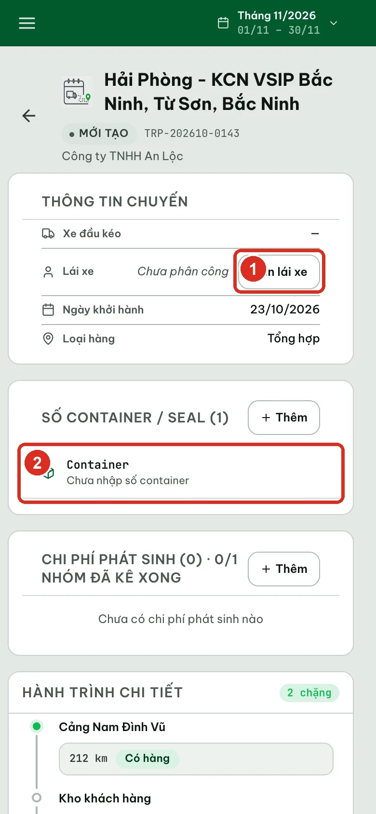
- Nhấn Gán lái xe rồi chọn lái xe chính của chuyến trong danh sách.
- Khối Container: nhấn "Thêm" để nhập/sửa số container và seal kèm ảnh chụp.
Tạm ứng
Cần tiền dự phòng trước chuyến (dầu, phí đường)? Lập đề nghị tạm ứng tại đây — Quản lý/Kế toán sẽ duyệt.
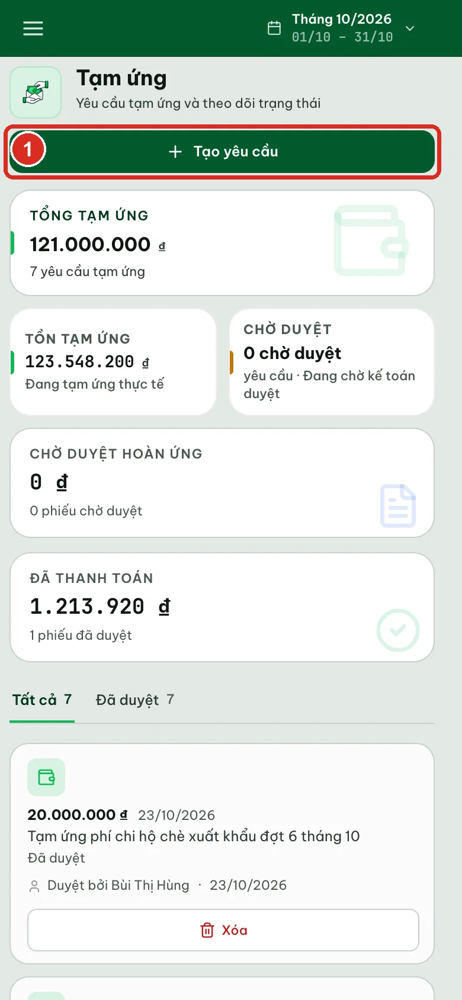
Phiếu thanh toán
Cuối chuyến/cuối tháng, lập phiếu thanh toán để đối chiếu chi phí thực tế với số tạm ứng.
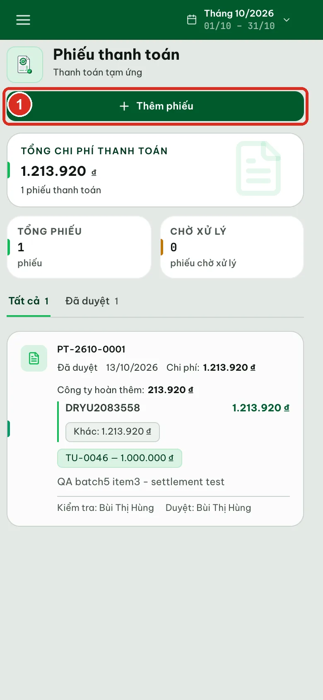